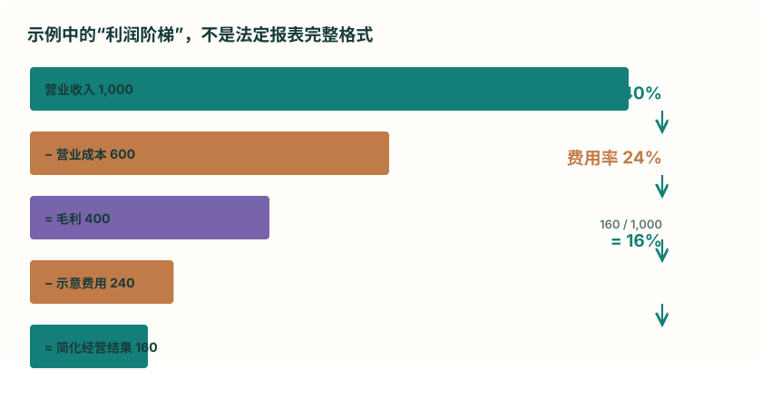

利润表：从收入到可持续利润
营收增长不一定意味着赚钱能力提高；利润表真正值得读的是每一级利润如何形成，以及每个确认判断在附注中有什么依据。
净利润增长，质量却可能下降
收入增加可能来自更高销量、更高价格、并购并表或账期延长；净利润增加也可能受到资产处置、补助、减值转回、所得税和投资收益等因素影响。因此先拆利润构成，再判断持续性，比仅看“同比增长”更可靠。会计利润是依适用准则形成的信息，不宜说成纯粹的“事实”或纯粹的“观点”；它有可核对的交易基础，也有必须披露的估计判断。
利润表代表一个报告期间而不是资产负债表日的余额。不同企业的业务模式、并表范围、会计政策和列报准则若不同，同行的行项目也不能直接机械对比。

毛利、营业利润、净利润并非同一层
毛利 = 营业收入 − 营业成本，是分析产品定价、生产成本及渠道结构的起点；毛利率应结合产品组合、原材料价格和收入确认政策解释。真实中国利润表的营业利润还涉及税金及附加、销售、管理、研发、财务费用，以及其他收益、投资收益、公允价值变动、减值损失、资产处置收益等项目，具体项目以对应期间和适用列报准则为准。
净利润还要考虑营业外收支及所得税费用；合并净利润需进一步区分归属于母公司股东的净利润和少数股东损益。扣除非经常性损益后的归母净利润属于特定披露与分析口径，不是所有准则下的通用法定净利润替代物，也不保证“扣非”后就一定可持续。
财政部 2026 年新《企业会计准则第30号》自 2027 年 1 月 1 日起施行，推动利润表分类和列报变化；IFRS 18 也从 2027 年起适用（允许提前采用）。比较旧表与新表时应先看重分类及调节披露，而不是把同名“小计”简单拼接为时间序列。
确认收入与实际收款是两条不同链路
收入确认须判断合同、履约义务、控制权转移与对价条件。比如服务期为一年的持续性服务，预收全年款项通常不应仅因收到现金就一次性确认为全年服务收入；而商品若在期末已满足收入确认条件、客户约定下期付款，则可能产生应收而没有当期收款。
如果应收账款增长明显快于营业收入，应继续判断账期、客户结构、坏账政策及期后回款；如果相关数字变化来自新业务模式或并购，则不能简单归因于“收入注水”。收入下降而现金改善，也可能是前期欠款集中回收。
成本、费用与估计如何影响利润
观察费用时，先固定分母（收入/相关业务规模）与跨期分类。研发投入一部分可能作为当期费用，某些符合确认条件的支出可能资本化；固定资产使用年限与残值估计变化也会影响折旧、利润及账面净值。相关处理是否合理，应回到准则条件和附注披露，而不是把所有资本化直接认定为财务粉饰。
| 线索 | 可能的经营解释 | 下一步核对 |
|---|---|---|
| 毛利率突然上升 | 提价、高毛利产品占比提高、成本下降 | 分部收入成本、存货与合同 |
| 费用率持续下降 | 规模效应、裁减投入、费用分类变化 | 人数、资本化、政策及同业趋势 |
| 利润高于现金流 | 赊销、备货、收款时点错配 | 经营现金流、应收账龄 |
| 一次性收益增加 | 处置资产、投资收益、补助 | 附注明细、持续性和归属口径 |
用数字复算简化毛利
示例营收 1,000、成本 600、其他示意费用 240（单位：万元），毛利 400、毛利率 40%，毛利减示意费用后为 160。这个计算不是法定“营业利润”的完整公式。
动手调整数字
修改输入观察对应关系；这是刻意简化的教学算例，不自动覆盖税金、特殊合同安排或其他现金流调整。
自测：一次性利润如何影响判断？
企业净利润由 60 增到 150，其中出售非核心资产带来税后收益 80。分析时要先分辨本期主业的利润贡献及资产出售是否重复发生，再看经营现金流与盈利预测，不能仅根据 150 的同比增幅外推下一年利润。
自测：上述净利润中，剔除 80 的简单示意利润是多少？
150 − 80 = 70（万元）。这仅是教学敏感性分析，不代表正式“扣非归母净利润”，因为正式口径还需考虑税、少数股东及其他非经常性项目。
本章结论：利润质量的关键不在绝对数，而在业务履约、费用匹配、现金兑现和可重复性是否互相支持。
官方资料与适用范围
以上示例数据均为教学虚构。法规与会计准则可能按年度修订，实际分析时应以公司报告期间适用版本为准。